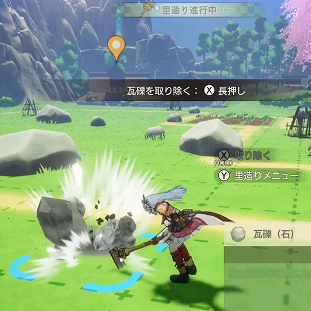
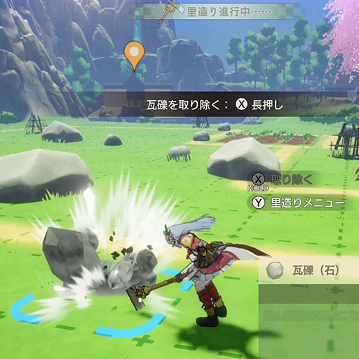
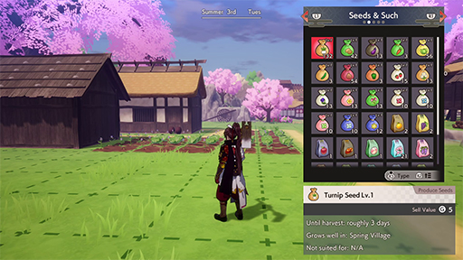
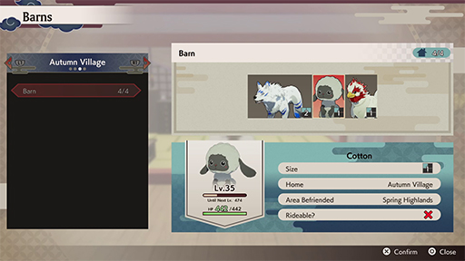
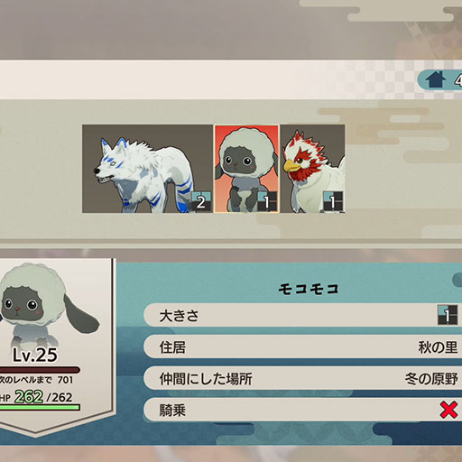
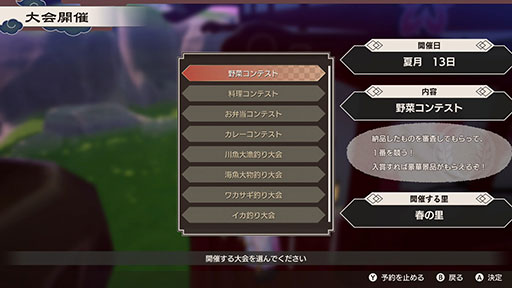
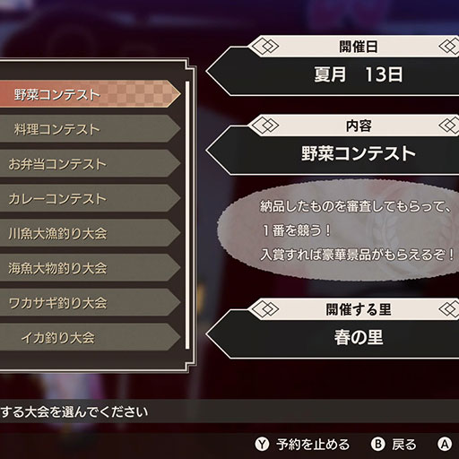

-
Village Builder Mode
 

Equip the Terra Tiller to enter Village Builder Mode, which lets you improve each village's development zones. First, remove debris with the C button. Then, place fields or buildings wherever you have space.
-
Building Menu

Press the S button in Village Builder Mode to open the Building menu. Select and place anything from seeds to terrain tiles.
-
Barns
 Barns house any monsters you've befriended. Some monsters will even produce items.
-
Contests
 Use the ledger at any village's god shrine to schedule a contest. Contests take place on most Holidays one or two weeks in the future and offer a chance to win fabulous prizes. However, you can't schedule contests on a Holiday the day before, the day of, or the day after a festival.